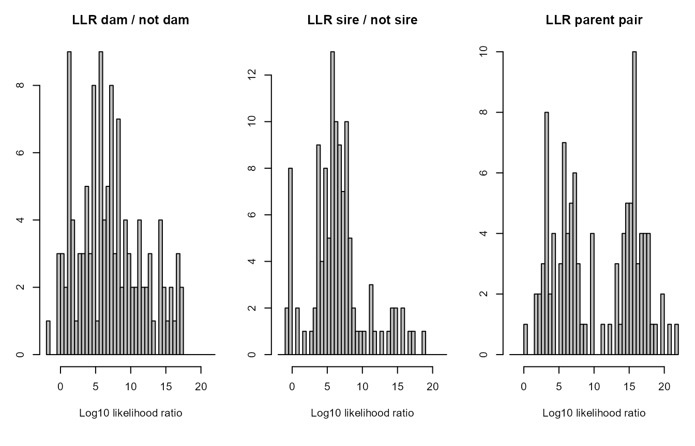
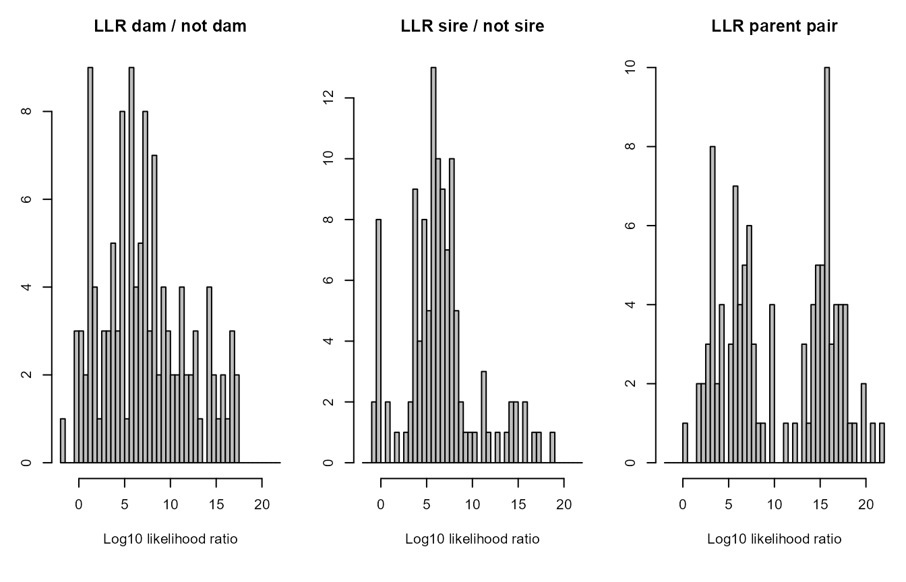
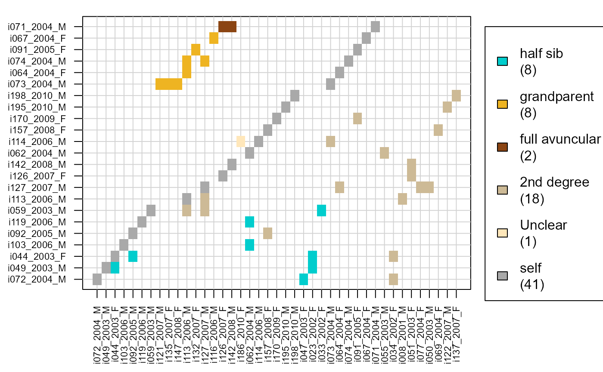

Sequoia report
sequoia_report.RmdThis report was created with the various griffin example files included with the package. The markdown file can be found at [https://github.com/JiscaH/sequoiaExtra] .
This pedigree was reconstructed using the R package
sequoia.
The R package sequoia reconstructs the pedigree in two
steps: first genotyped parents are assigned to genotyped offspring
(‘parentage assignment’), followed by clustering of siblings sharing a
non-genotyped parent and assignment of grandparents (‘full pedigree
reconstruction’).
Input summary
Parameter settings
kable(as.data.frame(t(SeqOUT$Specs)), booktabs=TRUE) %>%
kable_styling(full_width = FALSE)| Specs | |
|---|---|
| NumberIndivGenotyped | 142 |
| NumberSnps | 400 |
| GenotypingErrorRate | 1e-04 |
| MaxMismatchDUP | 3 |
| MaxMismatchOH | 2 |
| MaxMismatchME | 2 |
| Tfilter | -2 |
| Tassign | 0.5 |
| nAgeClasses | 7 |
| MaxSibshipSize | 100 |
| Module | ped |
| DummyPrefixFemale | F |
| DummyPrefixMale | M |
| Complexity | full |
| Herm | no |
| UseAge | yes |
| CalcLLR | TRUE |
| ErrFlavour | version2.0 |
| SequoiaVersion | 2.3.18 |
| TimeStart | 2022-12-17 12:33:09 |
| TimeEnd | 2022-12-17 12:33:33 |
Genotyping error: probability that actual genotype ‘act’ (rows) is observed as genotype ‘obs’ (columns).
SeqOUT$ErrM## obs
## act 0 1 2
## 0 9.999e-01 9.9995e-05 2.500e-09
## 1 5.000e-05 9.9990e-01 5.000e-05
## 2 2.500e-09 9.9995e-05 9.999e-01
# Note: this error matrix can be fully customised, see ?ErrToMGenetic data
if (!all(GenoM %in% c('NA', NA))) {
SnpStats(GenoM)
} else {
cat('No genotype matrix provided for this report. \n')
}
# Note1: SNPs with missingness >=90% (scored for <10% of individuals) are
# automatically excluded.
# Note2: Higher MAF is better. Monomorphic SNPs are automatically excluded.
# Note3: Very strong departure from HWE may affect pedigree reconstruction. Life history data
In sequoia, sex is coded as 1=female, 2=male, 3=unknown, 4=hermaphrodite.
table(Sex = SeqOUT$LifeHist$Sex)## Sex
## 1 2
## 95 105Unknown birth years may hinder pedigree reconstruction. Among others, they are used to determine which individual is the parent, and which the offspring in genetically identified parent-offspring pairs.
LH <- SeqOUT$LifeHist
table('Birth Year' = factor(LH$BirthYear <0, levels = c(FALSE, TRUE),
labels = c('known', 'missing')),
'min/max Birth Year' = factor(LH$BY.min <0 & LH$BY.max <0,
levels = c(FALSE, TRUE),
labels = c('known', 'missing')))## min/max Birth Year
## Birth Year known missing
## known 0 200
## missing 0 0
hist(LH$BirthYear,
breaks = c(min(LH$BirthYear, na.rm=TRUE) : (max(LH$BirthYear, na.rm=TRUE)+1)) -.5,
main = 'Distribution of birth years', xlab='')
Age distribution prior
The ‘age prior’ specifies the minimum and maximum age of parents, and the age difference distribution between siblings.
By default, for parentage assignment a flat prior is used with maximum parental age equal to the largest age difference between genotyped individuals. The maximum age for dams and sires can also be specified, as can discrete versus overlapping generations. The distribution can also be fully customised.
This age difference distribution is updated after parentage assignment and before full pedigree reconstruction (see further).
if (!all(GenoM %in% c('NA', NA))) {
LH_a <- LH[LH$ID %in% rownames(GenoM),]
} else {
LH_a <- LH
}
AP_IN <- do.call(MakeAgePrior, c(list(Pedigree = NULL,
LifeHistData = LH_a),
SeqOUT$args.AP))## ℹ Ageprior: Flat 0/1, overlapping generations, MaxAgeParent = 10,1010
# Note: Details about and help on the age prior can be found in
# vignette("Sequoia - Age 'Prior'")
SeqOUT$args.AP## $Flatten
## NULL
##
## $Smooth
## [1] TRUEOutput summary
Pedigree summary
Sibling clusters sharing a non-genotyped parent are assigned a ‘dummy’ parent. Via grandparent assignment to sibling clusters, parents are assigned to these dummy individuals. These grandparents may be both genotyped or dummy individuals.
Identifying the real non-genotyped individual corresponding to each
dummy individual may not always be possible, but the sequoia
website offers some suggestions when candidates are known.
sumry <- SummarySeq(SeqOUT, Plot=FALSE)
PlotSeqSum(sumry, SeqOUT$Pedigree, Panels='all', ask=FALSE)

 

The distributions of the number of opposing homozygous loci and other Mendelian errors in parent-offspring pairs and parent-parent-offspring trios give a rough impression of the genotyping error rate. These would always be zero in absence of any genotyping errors (and in absence of pedigree errors).
The distributions of the log10 likelihood ratios give a rough impression of the power of the genetic data to distinguish between different types of relationships and resolve the pedigree. Note that this is the likelihood ratio between the assigned parent being the parent versus it being another type of close relative, such as a full sibling of the focal individual or the true parent. It is not relative to other candidate parents of the focal individual.
kable(sumry$PedSummary, booktabs=TRUE) %>%
kable_styling(full_width = FALSE)| All | SNPd | |
|---|---|---|
| records | 167 | 142 |
| maternities | 122 | 65 |
| paternities | 116 | 79 |
| full sibs | 5 | 5 |
| maternal half sib | 129 | 89 |
| paternal half sibs | 103 | 77 |
| maternal grandmothers | 89 | 77 |
| maternal grandfathers | 84 | 75 |
| paternal grandmothers | 69 | 58 |
| paternal grandfathers | 66 | 55 |
| maximum pedigree depth | 8 | 7 |
| founders | 36 | 39 |
The size, depth and interconnectedness of the pedigree affect the power with which the pedigree can be used in subsequent analyses, such as heritability estimates.
Age distribution
After assignment of genotyped parents to genotyped offspring, the reconstructed pedigree is combined with the provided birth year information to estimate the distribution of age differences among mother-offspring, father-offspring, and sibling pairs. This age distribution is then used during further pedigree reconstruction.
PlotAgePrior(SeqOUT$AgePriors)
Estimated birth years
When a birth year is unknown, it is estimated from combining the above distribution of parental ages with any known birth years of its assigned parents and offspring.
LH_new <- SeqOUT$LifeHistSib
LH_new[LH_new$BirthYear < 0, ]## [1] id Sex BirthYear BY.min BY.max Sexx BY.est
## [8] BY.lo BY.hi
## <0 rows> (or 0-length row.names)Inferred sex
When the sex of an individual is missing from the input, it may be inferred during pedigree reconstruction when this individual forms a complementary parent pair with an individual of known sex (in species without hermaphrodites).
LH_new[LH_new$Sex == 3 & LH_new$Sexx != 3, ]## [1] id Sex BirthYear BY.min BY.max Sexx BY.est
## [8] BY.lo BY.hi
## <0 rows> (or 0-length row.names)Non-assigned likely relatives
The sequoia algorithm is rather conservative when making
assignments; it sequentially ‘grows’ the pedigree, and tries to avoid a
snowball effect of assignment errors. So, when no parent or siblings are
assigned, this does not necessarily mean these are not present in the
dataset.
The R package includes a separate function to identify pairs of likely relatives that have not been assigned, which may be due to a variety of reasons.
if (!all(Maybe %in% c('NA', NA))) {
MaybePO <- GetRelM(Pairs=Maybe$MaybePar)
PlotRelPairs(MaybePO)
if ('MaybeRel' %in% names(Maybe)) {
MaybeM <- GetRelM(Pairs=Maybe$MaybeRel)
PlotRelPairs(MaybeM)
}
} else if (!all(GenoM %in% c('NA', NA))) {
Maybe <- GetMaybeRel(GenoM, SeqList = SeqOUT, Module = 'ped', quiet=TRUE)
MaybeM <- GetRelM(Pairs=Maybe$MaybeRel)
PlotRelPairs(MaybeM)
} else {
cat("No 'maybe relatives' provided for this report. \n")
}
Confidence probabilities
The assignment accuracy is estimated from simulations. These simulations make several simplifying assumptions, and these numbers are therefore a lower bound for the confidence probability.
The probability is not estimated for each individual separately. Instead, they are grouped across a few categories, based on whether the parent is dam or sire, genotyped or a dummy, and whether there is a co-parent or not. It is also separated for genotyped versus dummy focal individuals.
if (!all(Conf %in% c('NA', NA))) {
kable(Conf$ConfProb,
caption = 'parent-pair confidence, per category (Genotyped/Dummy/None)')
} else {
cat('No confidence probabilities provided for this report. \n')
}| id.cat | dam.cat | sire.cat | dam.conf | sire.conf | pair.conf | N | |
|---|---|---|---|---|---|---|---|
| 14 | G | G | G | 1.0000000 | 1.0000000 | 1.0000000 | 568 |
| 13 | G | G | D | 1.0000000 | 1.0000000 | 1.0000000 | 277 |
| 15 | G | G | X | 1.0000000 | NA | NA | 227 |
| 11 | G | D | G | 0.9841270 | 1.0000000 | 0.9841270 | 252 |
| 10 | G | D | D | 1.0000000 | 1.0000000 | 1.0000000 | 88 |
| 12 | G | D | X | 1.0000000 | NA | NA | 49 |
| 17 | G | X | G | NA | 1.0000000 | NA | 197 |
| 16 | G | X | D | NA | 1.0000000 | NA | 38 |
| 18 | G | X | X | NA | NA | NA | 804 |
| 5 | D | G | G | 0.9914530 | 0.9914530 | 0.9914530 | 117 |
| 4 | D | G | D | 1.0000000 | 1.0000000 | 1.0000000 | 9 |
| 6 | D | G | X | 1.0000000 | NA | NA | 34 |
| 2 | D | D | G | 0.8888889 | 1.0000000 | 0.8888889 | 9 |
| 1 | D | D | D | NaN | NaN | NaN | 0 |
| 3 | D | D | X | 0.7777778 | NA | NA | 9 |
| 8 | D | X | G | NA | 0.9705882 | NA | 34 |
| 7 | D | X | D | NA | 1.0000000 | NA | 3 |
| 9 | D | X | X | NA | NA | NA | 100 |
Further details
Likelihood curve
The total likelihood is the probability of observing the genetic data, given the inferred pedigree and the presumed genotyping error rate. The initial likelihood is the probability if all genotyped individuals were unrelated and sampled from a large population in Hardy-Weinberg Equilibrium. The likelihood increases during pedigree reconstruction, and pedigree reconstruction is terminated when the total likelihood asymptotes.
nIt <- c(par = length(SeqOUT$TotLikPar),
ped = length(SeqOUT$TotLikSib))
with(SeqOUT, plot(1:nIt[1], TotLikPar, type="b", lwd=2, col="forestgreen",
xlim=c(1, sum(nIt)-1), xlab="Iteration (ped)", xaxt='n', cex.lab=1.2,
ylim=c(min(TotLikPar), max(TotLikSib)), ylab="Total log-likelihood"))
with(SeqOUT, lines((nIt[1]-1) + 1:nIt[2], TotLikSib, type="b", lwd=2))
axis(1, at=1, labels = 'HWE', cex.axis=1.2, col.axis='darkgrey')
axis(1, at=(nIt[1]+1)/2, labels = 'par', lwd.ticks=0, col.axis='forestgreen',
cex.axis=1.2)
axis(1, at=(nIt[1]):(nIt[1]+nIt[2]), labels=0:nIt[2], cex.axis=1.2)